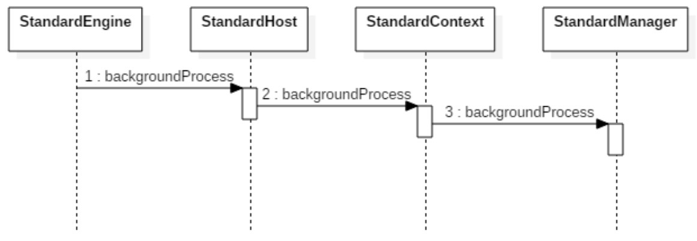
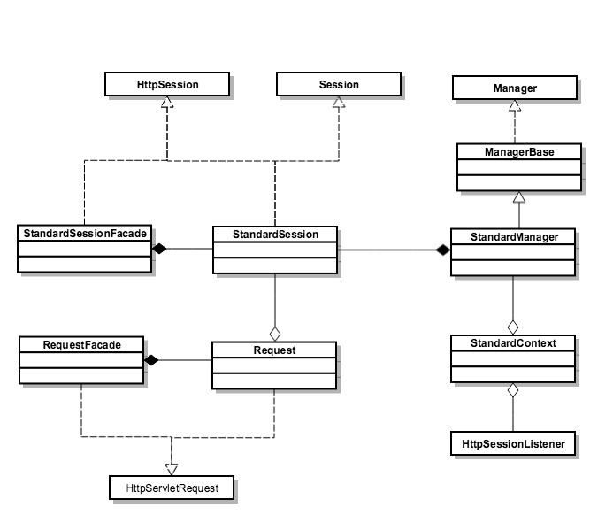

- 00 开篇词 Java程序员如何快速成长？.md.html
- 01 Web容器学习路径.md.html
- 02 HTTP协议必知必会.md.html
- 03 你应该知道的Servlet规范和Servlet容器.md.html
- 04 实战：纯手工打造和运行一个Servlet.md.html
- 05 Tomcat系统架构（上）： 连接器是如何设计的？.md.html
- 06 Tomcat系统架构（下）：聊聊多层容器的设计.md.html
- 07 Tomcat如何实现一键式启停？.md.html
- 08 Tomcat的“高层们”都负责做什么？.md.html
- 09 比较：Jetty架构特点之Connector组件.md.html
- 10 比较：Jetty架构特点之Handler组件.md.html
- 11 总结：从Tomcat和Jetty中提炼组件化设计规范.md.html
- 12 实战：优化并提高Tomcat启动速度.md.html
- 13 热点问题答疑（1）：如何学习源码？.md.html
- 14 NioEndpoint组件：Tomcat如何实现非阻塞I_O？.md.html
- 15 Nio2Endpoint组件：Tomcat如何实现异步I_O？.md.html
- 16 AprEndpoint组件：Tomcat APR提高I_O性能的秘密.md.html
- 17 Executor组件：Tomcat如何扩展Java线程池？.md.html
- 18 新特性：Tomcat如何支持WebSocket？.md.html
- 19 比较：Jetty的线程策略EatWhatYouKill.md.html
- 20 总结：Tomcat和Jetty中的对象池技术.md.html
- 21 总结：Tomcat和Jetty的高性能、高并发之道.md.html
- 22 热点问题答疑（2）：内核如何阻塞与唤醒进程？.md.html
- 23 Host容器：Tomcat如何实现热部署和热加载？.md.html
- 24 Context容器（上）：Tomcat如何打破双亲委托机制？.md.html
- 25 Context容器（中）：Tomcat如何隔离Web应用？.md.html
- 26 Context容器（下）：Tomcat如何实现Servlet规范？.md.html
- 27 新特性：Tomcat如何支持异步Servlet？.md.html
- 28 新特性：Spring Boot如何使用内嵌式的Tomcat和Jetty？.md.html
- 29 比较：Jetty如何实现具有上下文信息的责任链？.md.html
- 30 热点问题答疑（3）：Spring框架中的设计模式.md.html
- 31 Logger组件：Tomcat的日志框架及实战.md.html
- 32 Manager组件：Tomcat的Session管理机制解析.md.html
- 33 Cluster组件：Tomcat的集群通信原理.md.html
- 34 JVM GC原理及调优的基本思路.md.html
- 35 如何监控Tomcat的性能？.md.html
- 36 Tomcat I_O和线程池的并发调优.md.html
- 37 Tomcat内存溢出的原因分析及调优.md.html
- 38 Tomcat拒绝连接原因分析及网络优化.md.html
- 39 Tomcat进程占用CPU过高怎么办？.md.html
- 40 谈谈Jetty性能调优的思路.md.html
- 41 热点问题答疑（4）： Tomcat和Jetty有哪些不同？.md.html
- 特别放送 如何持续保持对学习的兴趣？.md.html
- 结束语 静下心来，品味经典.md.html
- 捐赠
32 Manager组件：Tomcat的Session管理机制解析
我们可以通过Request对象的getSession方法来获取Session，并通过Session对象来读取和写入属性值。而Session的管理是由Web容器来完成的，主要是对Session的创建和销毁，除此之外Web容器还需要将Session状态的变化通知给监听者。
当然Session管理还可以交给Spring来做，好处是与特定的Web容器解耦，Spring Session的核心原理是通过Filter拦截Servlet请求，将标准的ServletRequest包装一下，换成Spring的Request对象，这样当我们调用Request对象的getSession方法时，Spring在背后为我们创建和管理Session。
那么Tomcat的Session管理机制我们还需要了解吗？我觉得还是有必要，因为只有了解这些原理，我们才能更好的理解Spring Session，以及Spring Session为什么设计成这样。今天我们就从Session的创建、Session的清理以及Session的事件通知这几个方面来了解Tomcat的Session管理机制。
Session的创建
Tomcat中主要由每个Context容器内的一个Manager对象来管理Session。默认实现类为StandardManager。下面我们通过它的接口来了解一下StandardManager的功能：
public interface Manager {
public Context getContext();
public void setContext(Context context);
public SessionIdGenerator getSessionIdGenerator();
public void setSessionIdGenerator(SessionIdGenerator sessionIdGenerator);
public long getSessionCounter();
public void setSessionCounter(long sessionCounter);
public int getMaxActive();
public void setMaxActive(int maxActive);
public int getActiveSessions();
public long getExpiredSessions();
public void setExpiredSessions(long expiredSessions);
public int getRejectedSessions();
public int getSessionMaxAliveTime();
public void setSessionMaxAliveTime(int sessionMaxAliveTime);
public int getSessionAverageAliveTime();
public int getSessionCreateRate();
public int getSessionExpireRate();
public void add(Session session);
public void changeSessionId(Session session);
public void changeSessionId(Session session, String newId);
public Session createEmptySession();
public Session createSession(String sessionId);
public Session findSession(String id) throws IOException;
public Session[] findSessions();
public void load() throws ClassNotFoundException, IOException;
public void remove(Session session);
public void remove(Session session, boolean update);
public void addPropertyChangeListener(PropertyChangeListener listener)
public void removePropertyChangeListener(PropertyChangeListener listener);
public void unload() throws IOException;
public void backgroundProcess();
public boolean willAttributeDistribute(String name, Object value);
}
不出意外我们在接口中看到了添加和删除Session的方法；另外还有load和unload方法，它们的作用是分别是将Session持久化到存储介质和从存储介质加载Session。
当我们调用HttpServletRequest.getSession(true)时，这个参数true的意思是“如果当前请求还没有Session，就创建一个新的”。那Tomcat在背后为我们做了些什么呢？
HttpServletRequest是一个接口，Tomcat实现了这个接口，具体实现类是：org.apache.catalina.connector.Request。
但这并不是我们拿到的Request，Tomcat为了避免把一些实现细节暴露出来，还有基于安全上的考虑，定义了Request的包装类，叫作RequestFacade，我们可以通过代码来理解一下：
public class Request implements HttpServletRequest {}
public class RequestFacade implements HttpServletRequest {
protected Request request = null;
public HttpSession getSession(boolean create) {
return request.getSession(create);
}
}
因此我们拿到的Request类其实是RequestFacade，RequestFacade的getSession方法调用的是Request类的getSession方法，我们继续来看Session具体是如何创建的：
Context context = getContext();
if (context == null) {
return null;
}
Manager manager = context.getManager();
if (manager == null) {
return null;
}
session = manager.createSession(sessionId);
session.access();
从上面的代码可以看出，Request对象中持有Context容器对象，而Context容器持有Session管理器Manager，这样通过Context组件就能拿到Manager组件，最后由Manager组件来创建Session。
因此最后还是到了StandardManager，StandardManager的父类叫ManagerBase，这个createSession方法定义在ManagerBase中，StandardManager直接重用这个方法。
接着我们来看ManagerBase的createSession是如何实现的：
@Override
public Session createSession(String sessionId) {
//首先判断Session数量是不是到了最大值，最大Session数可以通过参数设置
if ((maxActiveSessions >= 0) &&
(getActiveSessions() >= maxActiveSessions)) {
rejectedSessions++;
throw new TooManyActiveSessionsException(
sm.getString("managerBase.createSession.ise"),
maxActiveSessions);
}
// 重用或者创建一个新的Session对象，请注意在Tomcat中就是StandardSession
// 它是HttpSession的具体实现类，而HttpSession是Servlet规范中定义的接口
Session session = createEmptySession();
// 初始化新Session的值
session.setNew(true);
session.setValid(true);
session.setCreationTime(System.currentTimeMillis());
session.setMaxInactiveInterval(getContext().getSessionTimeout() * 60);
String id = sessionId;
if (id == null) {
id = generateSessionId();
}
session.setId(id);// 这里会将Session添加到ConcurrentHashMap中
sessionCounter++;
//将创建时间添加到LinkedList中，并且把最先添加的时间移除
//主要还是方便清理过期Session
SessionTiming timing = new SessionTiming(session.getCreationTime(), 0);
synchronized (sessionCreationTiming) {
sessionCreationTiming.add(timing);
sessionCreationTiming.poll();
}
return session
}
到此我们明白了Session是如何创建出来的，创建出来后Session会被保存到一个ConcurrentHashMap中：
protected Map<String, Session> sessions = new ConcurrentHashMap<>();
请注意Session的具体实现类是StandardSession，StandardSession同时实现了javax.servlet.http.HttpSession和org.apache.catalina.Session接口，并且对程序员暴露的是StandardSessionFacade外观类，保证了StandardSession的安全，避免了程序员调用其内部方法进行不当操作。StandardSession的核心成员变量如下：
public class StandardSession implements HttpSession, Session, Serializable {
protected ConcurrentMap<String, Object> attributes = new ConcurrentHashMap<>();
protected long creationTime = 0L;
protected transient volatile boolean expiring = false;
protected transient StandardSessionFacade facade = null;
protected String id = null;
protected volatile long lastAccessedTime = creationTime;
protected transient ArrayList<SessionListener> listeners = new ArrayList<>();
protected transient Manager manager = null;
protected volatile int maxInactiveInterval = -1;
protected volatile boolean isNew = false;
protected volatile boolean isValid = false;
protected transient Map<String, Object> notes = new Hashtable<>();
protected transient Principal principal = null;
}
Session的清理
我们再来看看Tomcat是如何清理过期的Session。在Tomcat热加载和热部署的文章里，我讲到容器组件会开启一个ContainerBackgroundProcessor后台线程，调用自己以及子容器的backgroundProcess进行一些后台逻辑的处理，和Lifecycle一样，这个动作也是具有传递性的，也就是说子容器还会把这个动作传递给自己的子容器。你可以参考下图来理解这个过程。

其中父容器会遍历所有的子容器并调用其backgroundProcess方法，而StandardContext重写了该方法，它会调用StandardManager的backgroundProcess进而完成Session的清理工作，下面是StandardManager的backgroundProcess方法的代码：
public void backgroundProcess() {
// processExpiresFrequency 默认值为6，而backgroundProcess默认每隔10s调用一次，也就是说除了任务执行的耗时，每隔 60s 执行一次
count = (count + 1) % processExpiresFrequency;
if (count == 0) // 默认每隔 60s 执行一次 Session 清理
processExpires();
}
/**
* 单线程处理，不存在线程安全问题
*/
public void processExpires() {
// 获取所有的 Session
Session sessions[] = findSessions();
int expireHere = 0 ;
for (int i = 0; i < sessions.length; i++) {
// Session 的过期是在isValid()方法里处理的
if (sessions[i]!=null && !sessions[i].isValid()) {
expireHere++;
}
}
}
backgroundProcess由Tomcat后台线程调用，默认是每隔10秒调用一次，但是Session的清理动作不能太频繁，因为需要遍历Session列表，会耗费CPU资源，所以在backgroundProcess方法中做了取模处理，backgroundProcess调用6次，才执行一次Session清理，也就是说Session清理每60秒执行一次。
Session事件通知
按照Servlet规范，在Session的生命周期过程中，要将事件通知监听者，Servlet规范定义了Session的监听器接口：
public interface HttpSessionListener extends EventListener {
//Session创建时调用
public default void sessionCreated(HttpSessionEvent se) {
}
//Session销毁时调用
public default void sessionDestroyed(HttpSessionEvent se) {
}
}
注意到这两个方法的参数都是HttpSessionEvent，所以Tomcat需要先创建HttpSessionEvent对象，然后遍历Context内部的LifecycleListener，并且判断是否为HttpSessionListener实例，如果是的话则调用HttpSessionListener的sessionCreated方法进行事件通知。这些事情都是在Session的setId方法中完成的：
session.setId(id);
@Override
public void setId(String id, boolean notify) {
//如果这个id已经存在，先从Manager中删除
if ((this.id != null) && (manager != null))
manager.remove(this);
this.id = id;
//添加新的Session
if (manager != null)
manager.add(this);
//这里面完成了HttpSessionListener事件通知
if (notify) {
tellNew();
}
}
从代码我们看到setId方法调用了tellNew方法，那tellNew又是如何实现的呢？
public void tellNew() {
// 通知org.apache.catalina.SessionListener
fireSessionEvent(Session.SESSION_CREATED_EVENT, null);
// 获取Context内部的LifecycleListener并判断是否为HttpSessionListener
Context context = manager.getContext();
Object listeners[] = context.getApplicationLifecycleListeners();
if (listeners != null && listeners.length > 0) {
//创建HttpSessionEvent
HttpSessionEvent event = new HttpSessionEvent(getSession());
for (int i = 0; i < listeners.length; i++) {
//判断是否是HttpSessionListener
if (!(listeners[i] instanceof HttpSessionListener))
continue;
HttpSessionListener listener = (HttpSessionListener) listeners[i];
//注意这是容器内部事件
context.fireContainerEvent("beforeSessionCreated", listener);
//触发Session Created 事件
listener.sessionCreated(event);
//注意这也是容器内部事件
context.fireContainerEvent("afterSessionCreated", listener);
}
}
}
上面代码的逻辑是，先通过StandardContext将HttpSessionListener类型的Listener取出，然后依次调用它们的sessionCreated方法。
本期精华
今天我们从Request谈到了Session的创建、销毁和事件通知，里面涉及不少相关的类，下面我画了一张图帮你理解和消化一下这些类的关系：

Servlet规范中定义了HttpServletRequest和HttpSession接口，Tomcat实现了这些接口，但具体实现细节并没有暴露给开发者，因此定义了两个包装类，RequestFacade和StandardSessionFacade。
Tomcat是通过Manager来管理Session的，默认实现是StandardManager。StandardContext持有StandardManager的实例，并存放了HttpSessionListener集合，Session在创建和销毁时，会通知监听器。
课后思考
TCP连接的过期时间和Session的过期时间有什么区别？
不知道今天的内容你消化得如何？如果还有疑问，请大胆的在留言区提问，也欢迎你把你的课后思考和心得记录下来，与我和其他同学一起讨论。如果你觉得今天有所收获，欢迎你把它分享给你的朋友。
© 2019 - 2023 Liangliang Lee. Powered by gin and hexo-theme-book.